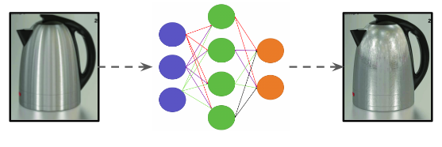
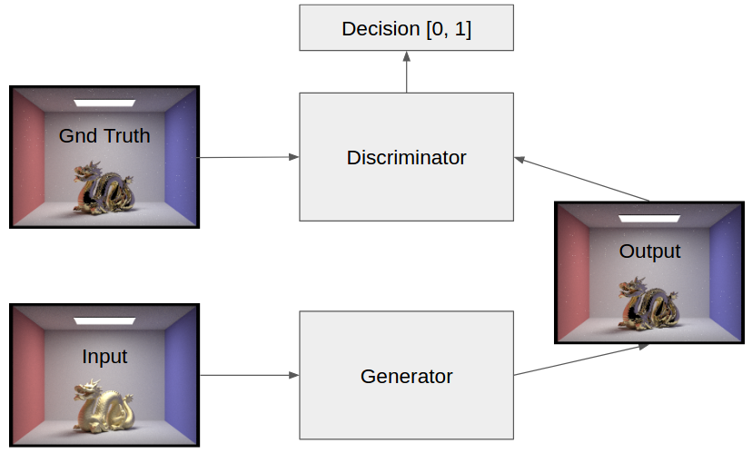

|  |
While .dae files that describe scenes of interest are incredibly descriptive, they are not plentiful. Images, while less descriptive, are ubiquitous. It would be interesting and useful if we could alter the BRDFs of arbitrary objects in our images. We can change a picture of a mug from a lambertian brdf to a glossy one (and vice versa). It could also improve 3D reconstruction via binocular stereopsis because algorithms for finding corresponding points assume that objects in the scene have lambertian surface brdfs. While this may be ambitious (and we have a backup plan), ultimately we hope to produce a project that alters/improves a commodity that is prevalent in everyone’s life: an image file.
Neural networks have been used widely in image processing recently, but here we ask if it is feasible to generate high-quality images effectively using neural networks. We begin by simply improving the quality and efficiency of renders and then move on to changing the domain in which the renders themselves appear. This is important because, given time or processing limitation, it may be infeasible to deterministically trace out rays to enormous depths to achieve high-quality renders. In these cases, it may be more effective to use a neural network to approximate these renders while still generating high-quality, believable images. We plan on solving this problem by using different styles of GANs, which are neural networks trained to generate images that look similar to the target domain.
One example of their use is in simply increasing the quality of the renders. By knowing what high quality renders and their low quality versions look like, they can learn to generate the high quality ones from the low quality ones. The other example is domain transfer; by knowing what an image with a glossy BRDF looks like and what one with a diffuse BRDF looks like, they can learn to transfer the styles of objects between the two. A potential use case for this is to speed up renders and make them more high-quality, or allow for fast testing and iteration of different styles of objects.
Our first deliverable will involve a neural network based post-processor that smooths images and processes them to look more high-quality than the raw render itself can look. High-quality renders tend to see very quickly diminishing returns on upsampling, increasing ray depth, and more.
For this part of the deliverable, we will have three types of renders:
-The original render, low quality, of scenes from a ray tracer
-The polished render, high quality, of scenes post-processed by the neural network
-The polished render, high quality, of scenes from a ray tracer
-Total render + post-processing time (s)
-Adversarial loss
-SIFT feature loss
-PCA-based comparison
-MSE
-Is there a more efficient way to achieve high-quality renders?
-Is it possible to “extract” information and upscale images given knowledge of the domain in which we are rendering?
-Can our post-processed renders maintain high-quality features?
This project will involve using a Generative Adversarial Network to take in an image of an object and spit out an image of the same object but with a different specified BRDF. Having this work for scenes with detailed backgrounds is very ambitious so likely our first tests will be on very simple scenes with just a simple geometric object, a light source and completely black space in the background.
|  |
The GAN consists of a 2 neural network system consisting of the generator and the discriminator. The generator receives and input image and produces an output. After accumulating enough of these outputs, we bundle them into a batch. We have ground truth images for each output in this batch. We train hand our discriminator the ground truth batch and the output batch and it tries to predict whether each image is real or fake. Through training, the generator will learn to produce images that are more similar to the ground truth and the discriminator will learn to better discern between the two. If training is successful, the generator’s output will match the ground truth, leaving the discriminator guessing randomly.
While recent work [cyclegan] as allowed style/texture transfer without paired data, in our problem, we can produce synthetic paired data, so a conditional GAN trained on paired examples should suffice. To collect data, we will need to obtain an efficient ray tracer and a plethora of scenes. From each scene, we will take 2m images from m different camera viewing angles. For each vantage point, one image will have an object of BRDF_A and the other image will have the object with BRDF_B. This is a way of producing “Paired” data for the generator and discriminator inputs. This will likely be an engineering challenge.
-Cool before/after images generated by our GAN.
-Adversarial Training/Testing Loss (Is our discriminator fooled by our results?)
-Eye Test (Does it look legit?)
-Can current Neural Network architectures learn this type of transfer?
-If not, how can we alter the Networks to produce something reasonable/interesting?
-Can the results be applied to domains like 3D reconstruction via Stereo?
Set up and understand the pix2pix cGAN infrastructure using the existing github repo. Find efficient ray tracer.
Set up infrastructure for collecting synthetic training data.
Test/Debug GAN with our data on simple scenes.
Finish debugging GAN and/or try on more complex scenes.